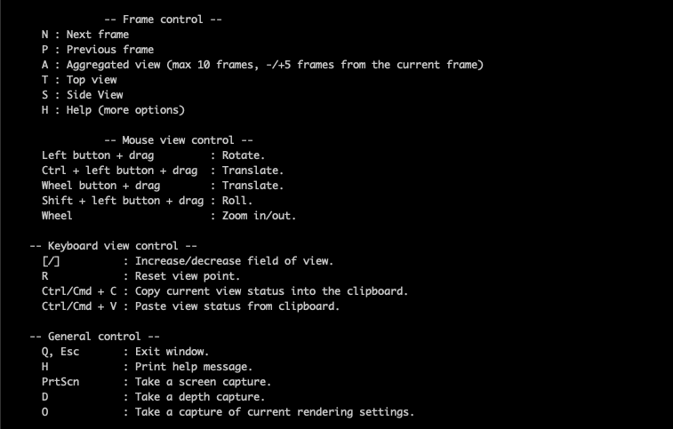
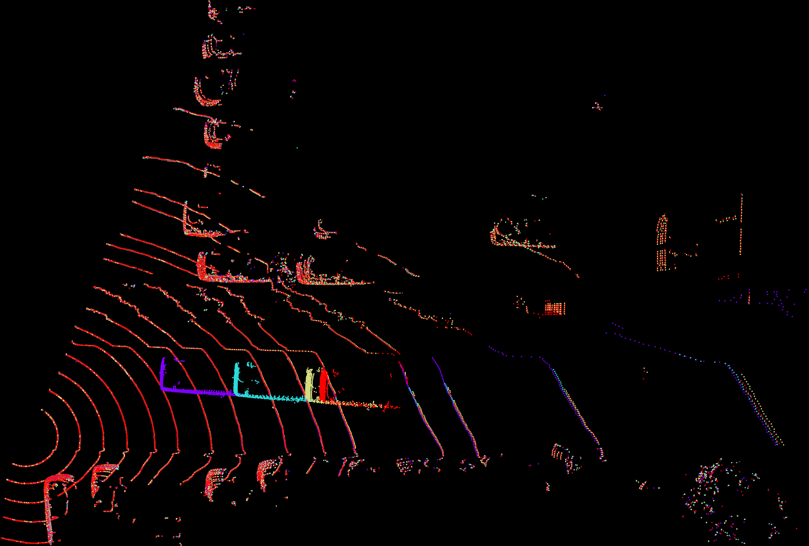

Debugging Lidar Data¶
How to use the lidar debugger¶
if __name__ == '__main__':
scene = create_scene(
'data/',
frames=range(1,6)
)
# Debugging methods
scene.get_frame(index=1).add_debug_lines() # add lines using the camera position and heading
scene.preview() # preview task
See also
scene.get_frame(index=1).add_debug_lines() is optional, it is useful to help debug extrinsic camera values.
scene.preview() will open a local lidar debugger, which allows you to view the point clouds for each frame or an aggregation of frames.
The local lidar debugger is a new window showing the point cloud:
On the terminal you will see the command to move and interact with the point cloud (remember that the debugger is based on open3d, so you can use any open3d command):
The most useful commands (apart of the ones to move) are:
T - top view
S - Side view
N - Move to the next frame
P - Previous frame
A - Aggregated view
Aggregated view¶
Aggregated view will help you to understand if your transformation from ego to world coordinates is correct. Here is an example of a wrong transformation:
See also
Using the aggregated view you are able to visualize the point cloud in multiple consecutive frames (up to 10 frames). Each frame points are going to be visualized with different colors.
In the image above, the ego2world is incorrect because the points for stationary objects (like poles) are not the same across the aggregated frames. The car is not stationary, which is why that motion is fine. The poles should near the top and bottom are incorrect because stationary objects are moving.
The image below is a good ego2world transformation because the parked cars are stationary in the aggregated frames while the moving car has different point positions in every frame.
See also
The green sphere is always placed always at 0,0,0 . If the point cloud is not at the position you will need to move to see it. To fix that you can normalize the poses to the first frame (this will set the first frame position to 0,0,0) , if that’s the case probably this line is commented.